谷粒学院
功能简介
谷粒学院，是一个 B2C 模式的职业技能教育系统，分为前台用户系统和后台运营平台。
项目描述
1、在线教育系统，分为前台网站系统和后台运营平台，B2C 模式。
使用了微服务技术架构，前后端分离开发。
前台用户系统包括：首页数据显示、课程列表和详情、名师详情、登录与注册、微信扫码登录、课程支付、课程播放.
后台管理系统包括：讲师管理、课程分类管理、课程管理、统计分析、轮播图管理、订单管理、权限管理等功能。
后端的主要技术架构是：SpringBoot + SpringCloud + SpringSecurity + MyBatis-Plus + MySQL +
Maven+EasyExcel.
前端的架构是：Node.js + Vue.js +element-ui+NUXT+ECharts
其他涉及到的中间件包括 Redis、阿里云 OSS、阿里云视频点播, 阿里云短信服务、微信支付与微信扫码登录.
业务中使用了 ECharts 做图表展示，使用 EasyExcel 完成分类批量添加、注册分布式单点登录使用了 JWT。
一句话总结：
前端部分，使用主流的前端框架 Vue，使用 Es6 的开发规范，采用模块化的开发模式。 后端部分，使用目前流行的 SpringBoot+SpringCloud 进行微服务架构，使用 Feign、Gateway、Hystrix，以及阿里巴巴的 Nacos 等组件搭建了项目的基础环境。
业务架构图
后台系统功能
1 | 1、登录功能（Spring security框架） |
前台系统功能
1 | 1、系统首页数据显示 |
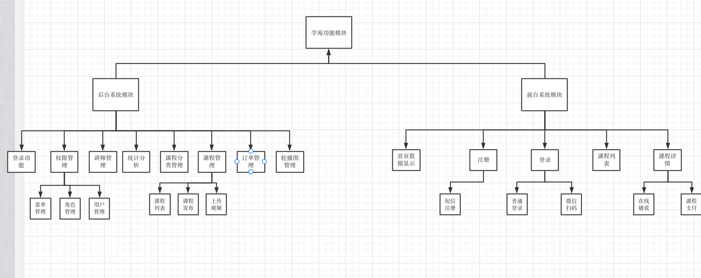
技术架构图
1、前端技术点
1 | 前后端分离开发 |
2、后端技术点
1 | 1、微服务架构 |
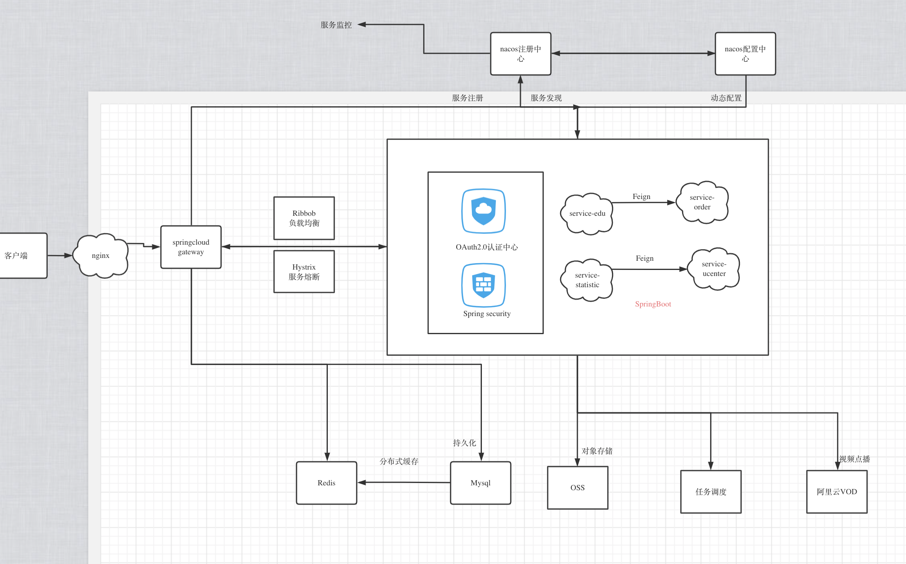
遇到的问题
1、统一返回的 json 时间格式问题
默认情况下 json 时间格式带有时区, 并且是世界标准时间, 和我们的时间差了 8 个小时.
在 application.prperties 里面配置
1 | spring.jackson.date-format=yyyy-MM-dd HH:mm:ss |
2、跨域问题
什么是跨域：浏览器从一个域名的网页去请求另一个域名的资源时, 域名、端口、协议任一不同. 就会产生跨域问题.
解决办法：
- controller 上加上@CrosOrigin 注解
- 通过配置类 CorsConfiguration 配置 allowMethod、allowOrigin、allowheader 解决.
3、路由切换问题
vue-router 导航切换 时，如果两个路由都渲染同个组件，组件会重用,
组件的生命周期钩子（created）不会再被调用, 使得组件的一些数据无法根据 path 的改变得到更新
因此：
1、我们可以在 watch 中监听路由的变化，当路由变化时，重新调用 created 中的内容
1 | watch: { //监听 |
2、在 init 方法中我们判断路由的变化，如果是修改路由，则从 api 获取表单数据，
如果是新增路由，则重新初始化表单数据（通过 param 判断）
1 | init() { |
4、oss 模块中有数据库的依赖, 但配置文件没有配置数据源,导致启动报错
spring boot 会默认加载 org.springframework.boot.autoconfigure.jdbc.DataSourceAutoConfiguration 这个类，而 DataSourceAutoConfiguration 类使用了@Configuration 注解向 spring 注入了 dataSource bean，又因为项目（oss 模块）中并没有关于 dataSource 相关的配置信息，所以当 spring 创建 dataSource bean 时因缺
少相关的信息就会报错。
解决：
1 | (exclude = DataSourceAutoConfiguration.class) |
5、oss 模块上传图片 413 错误(Request Entity Too large)报错
使用了 nginxweb 服务器，并且上传到文件比较大时, 会爆 413 Request Entity Too large 的错误.
解决办法：修改 nginx 的最大上传限制
1 | client_max_body_size 1024m; #最大限制为1024M |
之后测试再上传一个大一点的图片, 爆：
1 | org.springframework.web.multipart.MaxUploadSizeExceededException |
是因为 springboot 自动配置了对上传文件大小的限制, 默认单个文件最大 1Mb,单次请求文件总数大小最大 10Mb
修改为
1 | spring.servlet.multipart.max-file-size = 20MB |
6、properties 文件中 ‘=’ 右边不能加空格，末尾也是.
7、maven 打包问题
问题一：
Maven 加载的时候，把 Java 文件夹里面.java 文件类型文件进行编译，如果有其他类型文件不会加载.
解决办法：
- 将 xml 复制到 target 目录下
- 配置。
- mybatis-plus.mapper-locations=classpath:com/atguigu/educenter/mapper/xml/*.xml
- pom.xml 中配置将打包时会将 java 目录中的*.xml 文件也进行打包
问题二
Maven package 打 jar 包的时候, 默认不会将 resources 下的文件打入 classes 文件夹, 导致启动 jar 包无法加载配置文件.
解决办法：
1 | <resource> |
问题三
多模块打包问题：多个模块具有依赖, 常规的打包方式不实用了.
解决办法：
parent pom 下加入
1 | <configuration> |
common pom 下加入
1 | <configuration> |
其他 pom 文件把
8、前端问题：es6 模块化运行问题：
问题：import 外部 js 文件问题 报错
解决：Nodejs 使用 Babel 把 Es6 代码转换 Es5 代码执行
9、Mybatis-plus id 问题
mp 生成 id 值长度为 19 位, js 处理数字类型的时候只能处理到 16 位, 所以将 id 类型改为字符串类型.
413:请求体过大
403:跨域
302:访问一个 Url 时，被重定向到另一个 url 上。常用于页面跳转
微服务
什么是微服务
微服务最早由 Martin Fowler 与 James Lewis 于 2014 年共同提出，微服务架构风格是一种使用一套小服务来开发单个应用的方式途径，每个服务运行在自己的进程中，并使用轻量级机制通信，通常是 HTTP API，这些服务基于业务能力构建，并能够通过自动化部署机制来独立部署，这些服务使用不同的编程语言实现，以及不同数据存储技术，并保持最低限度的集中式管理。
为什么需要微服务
在传统的 IT 行业软件大多都是各种独立系统的堆砌，这些系统的问题总结来说就是扩展性差，可靠性不高，维护成本高。到后面引入了 SOA(Service Oriented Architecture)服务化，但是，由于 SOA 早期均使用了总线模式，这种总线模式是与某种技术栈强绑定的，比如：J2EE。这导致很多企业的遗留系统很难对接，切换时间太长，成本太高，新系统稳定性的收敛也需要一些时间。
微服务与单体架构的区别
（1）单体架构所有的模块全都耦合在一块，代码量大，维护困难。
微服务每个模块就相当于一个单独的项目，代码量明显减少，遇到问题也相对来说比较好解决。
（2）单体架构所有的模块都共用一个数据库，存储方式比较单一。
微服务每个模块都可以使用不同的存储方式（比如有的用 redis，有的用 mysql 等），数据库也是单
个模块对应自己的数据库。
（3）单体架构所有的模块开发所使用的技术一样。
微服务每个模块都可以使用不同的开发技术，开发模式更灵活。
微服务开发框架
目前微服务的开发框架，最常用的有以下四个：
Spring Cloud：http://projects.spring.io/spring-cloud（现在非常流行的微服务架构）
Dubbo：http：//dubbo.io
Dropwizard：http://www.dropwizard.io （关注单个微服务的开发）
Consul、etcd&etc.（微服务的模块）
什么是 springcloud
Spring Cloud 是一系列框架的集合。它利用 Spring Boot 的开发便利性简化了分布式系统基础设施的开
发，如服务发现、服务注册、配置中心、消息总线、负载均衡、 熔断器、数据监控等，都可以用 Spring
Boot 的开发风格做到一键启动和部署。Spring 并没有重复制造轮子，它只是将目前各家公司开发的比较
成熟、经得起实际考验的服务框架组合起来，通过 SpringBoot 风格进行再封装屏蔽掉了复杂的配置和实
现原理，最终给开发者留出了一套简单易懂、易部署和易维护的分布式系统开发工具包
springcloud 与 springboot 的区别
Spring Boot 是 Spring 的一套快速配置脚手架，可以基于 Spring Boot 快速开发单个微服务。
Spring Cloud 是一个基于 Spring Boot 实现的开发工具；Spring Boot 专注于快速、方便集成的单个微服务个体，Spring Cloud 关注全局的服务治理框架； Spring Boot 使用了默认大于配置的理念，很多集成方案已经帮你选择好了，能不配置就不配置，Spring Cloud 很大的一部分是基于 Spring Boot 来实现，必须基于 Spring Boot 开发。可以单独使用 Spring Boot 开发项目，但是 Spring Cloud 离不开 Spring Boot。
spring cloud 相关基础组件
服务发现——Netflix Eureka （Nacos）
服务调用——Netflix Feign
熔断器——Netflix Hystrix
服务网关——Spring Cloud GateWay
分布式配置——Spring Cloud Config （Nacos）
消息总线 —— Spring Cloud Bus （Nacos）
八、springcloud 小版本
Spring Cloud 小版本分为:
SNAPSHOT： 快照版本，随时可能修改
M： MileStone，M1 表示第 1 个里程碑版本，一般同时标注 PRE，表示预览版版。
SR： Service Release，SR1 表示第 1 个正式版本，一般同时标注 GA：(GenerallyAvailable),表示稳定版
本。
项目中使用的微服务组件
Nacos 注册中心
1、基本概念
Nacos 致力于帮助您发现、配置和管理微服务, 属于阿里巴巴
2、本地启动
nacos/conf 下执行 nacos-mysql.sql 脚本, 在本地生成数据库表.
修改 applicaiton.properties 配置文件, 修改数据库连接用户名、密码等.
启动：bin 目录下
./startup.sh -m standalone
3、nacos 功能
- 服务发现和服务健康检测
- 动态配置服务
Feign
1、基本概念
Feign 是 Netflix 开发的声明式、模板化的 HTTP 客户端， Feign 可以帮助我们更快捷、优雅地调
用 HTTP API。
转化请求 Feign 是一个 http 请求调用的轻量级框架，可以以 Java 接口注解的方式调用 Http 请求，封装了 Http 调用流程。
2、导入依赖
1 | spring-cloud-starter-openfeign |
3、启动类添加注解
1 |
4、创建包和接口
@FeignClient 注解用于指定从哪个服务中调用功能 ，名称与被调用的服务名保持一致。
@DeleteMapping 注解用于对被调用的微服务进行地址映射。
@PathVariable 注解一定要指定参数名称，否则出错
@Component 注解防止，在其他位置注入 vodClient 时 idea 报错
1 | @FeignClient("service-vod") |
Hystrix
Spring Cloud 在接口调用上，大致会经过如下几个组件配合：
Feign ----->Hystrix —>Ribbon —>Http Client（apache http components 或者 Okhttp） 具体交互流程上，如下
图所示：
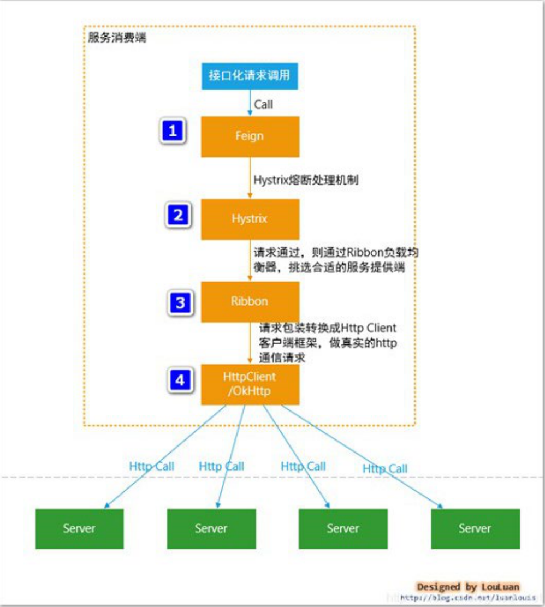
（1）接口化请求调用当调用被@FeignClient 注解修饰的接口时，在框架内部，将请求转换成 Feign 的请求实例 feign.Request，交由 Feign 框架处理。
（2）Feign ：转化请求 Feign 是一个 http 请求调用的轻量级框架，可以以 Java 接口注解的方式调用 Http 请求，封装了 Http 调用流程。
（3）Hystrix：熔断处理机制 Feign 的调用关系，会被 Hystrix 代理拦截，对每一个 Feign 调用请
求，Hystrix 都会将其包装成 HystrixCommand,参与 Hystrix 的流控和熔断规则。如果请求判断需要熔断，则 Hystrix 直接熔断，抛出异常或者使用 FallbackFactory 返回熔断 Fallback 结果；如果通过，则将调用请求传递给 Ribbon 组件。
（4）Ribbon：服务地址选择 当请求传递到 Ribbon 之后,Ribbon 会根据自身维护的服务列表，根据服务的服务质量，如平均响应时间，Load 等，结合特定的规则，从列表中挑选合适的服务实例，选择好机器之后，然后将机器实例的信息请求传递给 Http Client 客户端，HttpClient 客户端来执行真正的 Http 接口调用；
（5）HttpClient ：Http 客户端，真正执行 Http 调用根据上层 Ribbon 传递过来的请求，已经指定了服务地址，则 HttpClient 开始执行真正的 Http 请求
1、Hystrix 概念
Hystrix 是一个供分布式系统使用，提供延迟和容错功能，保证复杂的分布系统在面临不可避免的失败
时，仍能有其弹性。比如系统中有很多服务，当某些服务不稳定的时候，使用这些服务的用户线程将会阻塞，如果没有隔离机制，系统随时就有可能会挂掉，从而带来很大的风险。SpringCloud 使用 Hystrix 组件提供断路器、资源隔离与自我修复功能。 简称：兜底
2、引入依赖
1 | spring-cloud-starter-netflix-hystrix |
3、配置文件
1 | #开启熔断机制 |
4、开始兜底
1 | @FeignClient(name = "service-vod", fallback = VodFileDegradeFeignClient.class) |
sprincloud gateway
API 网关是介于客户端和服务器端之间的中间层，所有的外部请
求都会先经过 API 网关这一层。也就是说，API 的实现方面更多的考虑业务逻辑，而安全、性能、监控
可以交由 API 网关来做
spring cloud config
Spring Cloud Config 为分布式系统的外部配置提供了服务端和客户端的支持方案.server 提供配置文件的存储、以接口的形式将配置文件的内容提供出去，client 通过接口获取数据、并依据此数据初始化自己的应用。
使用 nacos 替换 config
系统配置的集中管理（编辑、存储、分发）、动态更新不重启、回滚配置（变更管理、
历史版本管理、变更审计）等所有与配置相关的活动
Redis
1、介绍
Redis 是当前比较热门的 NOSQL 系统之一，它是一个开源的使用 ANSI c 语言编写的 key-value 存储系统（区别于 MySQL 的二维表格的形式存储）。和 Memcache 类似，但很大程度补偿了 Memeache 的不
足。和 Memcache 一样，Redis 数据都是缓存在计算机内存中，不同的是，Memcache 只能将数据缓存到内存中，无法自动定期写入硬盘，这就表示，一断电或重启，内存清空，数据丢失。所以 Memcache 的应用场景适用于缓存无需持久化的数据。而 Redis 不同的是它会周期性的把更新的数据写入磁盘或者把修改操作写入追加的记录文件，实现数据的持久化。
2、Redis 特点
- Redis 读取的速度是 110000 次/s，写的速度是 81000 次/s；
- 原子 。Redis 的所有操作都是原子性的，同时 Redis 还支持对几个操作全并后的原子性执行。
- 支持多种数据结构：string（字符串）；list（列表）；hash（哈希），set（集合）；zset(有序集合)
- 持久化，集群部署
- 支持过期时间，支持事务，消息订阅
3、maven 依赖
spring-boot-starter-data-redis
commons-pool2
4、redis 使用场景 - 热点数据的缓存
- 对于访问量大单不经常修改的数据适合进行缓存 例如首页数据
- 限时业务的运用
- 短信验证码
- 计算器相关问题
- incrby 命令可以实现原子性的递增. 可用于分布式 id 的生成
5、spingboot 缓存注解
- incrby 命令可以实现原子性的递增. 可用于分布式 id 的生成
- @Cacheable
- 根据方法对其返回结果进行缓存，下次请求时，如果缓存存在，则直接读取缓存数据返回；如果缓存不存在，则执行方法，并把返回的结果存入缓存中。一般用在查询方法上。
- @CachePut
- 使用该注解标志的方法，每次都会执行，并将结果存入指定的缓存中。其他方法可以直接从响应的缓存中读取缓存数据，而不需要再去查询数据库。一般用在新增方法上。
- CacheEvict
- 使用该注解标志的方法，会清空指定的缓存。一般用在更新或者删除方法上
6、redis 启动
- 使用该注解标志的方法，会清空指定的缓存。一般用在更新或者删除方法上
- 1、关闭 linux 防火墙
- 2、找到 redis.conf, 注释掉 #bind 127.0.0.1
每日统计数据
使用定时任务, 每日凌晨执行.
配合 Echarts 使用.
权限管理
不同角色的用户登录后台管理系统拥有不同的菜单权限与功能权限，权限管理包含三个功能模块：菜单
管理、角色管理和用户管理.
rbac:Role-Based Access Control 基于角色的访问控制. like persona.
RBAC 认为 “授权”实际上是 Who、What、How 三元组之间的关系, 也就是 Who 对 What 进行 How 的操作.
数据库五张表
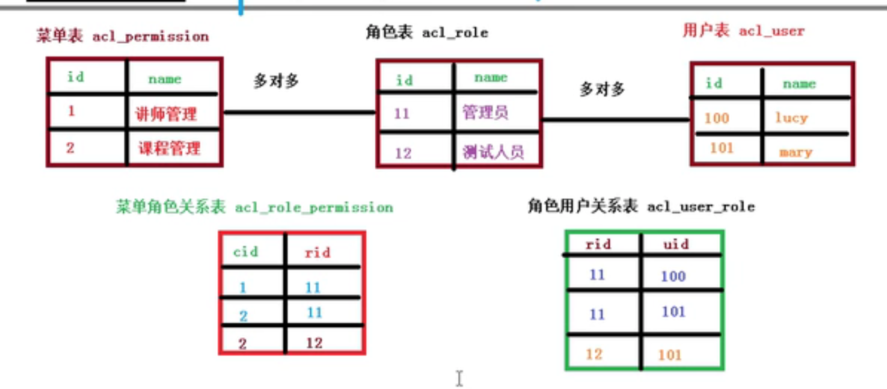
菜单（权限）管理
使用树形结构显示…
给角色分配权限
角色管理
角色的 CRUD.
用户管理
用户 CRUD.
给用户分配角色.
Spring Security
介绍
Spring Security 基于 Spring 框架，提供了一套
Web 应用安全性的完整解决方案。一般来说，Web 应用的安全性包括用户认证（Authentication）和用
户授权（Authorization）两个部分。
（1）用户认证指的是：验证某个用户是否为系统中的合法主体，也就是说用户能否访问该系统。用户认
证一般要求用户提供用户名和密码。系统通过校验用户名和密码来完成认证过程。
（2）用户授权指的是验证某个用户是否有权限执行某个操作。在一个系统中，不同用户所具有的权限是
不同。比如对一个文件来说，有的用户只能进行读取，而有的用户可以进行修改。一般来说，系统会
为不同的用户分配不同的角色，而每个角色则对应一系列的权限。
Spring Security其实就是用filter，多请求的路径进行过滤。
（1）如果是基于 Session，那么 Spring-security 会对 cookie 里的 sessionid 进行解析，找到服务器存储
的 sesion 信息，然后判断当前用户是否符合请求的要求。
（2）如果是 token，则是解析出 token，然后将当前请求加入到 Spring-security 管理的权限信息中去
认证与授权实现
如果系统的模块众多，每个模块都需要就行授权与认证，所以我们选择基于 token 的形式进行授权与认
证，用户根据用户名密码认证成功，然后获取当前用户角色的一系列权限值，并以用户名为 key，权限列
表为 value 的形式存入 redis 缓存中，根据用户名相关信息生成 token 返回，浏览器将 token 记录到 cookie 中，
每次调用 api 接口都默认将 token 携带到 header 请求头中，Spring-security 解析 header 头获取 token 信息，解
析 token 获取当前用户名，根据用户名就可以从 redis 中获取权限列表，这样 Spring-security 就能够判断当前
请求是否有权限访问.
代码实现：
核心配置类继承 WebSecurityConfigurerAdapter, 并加上@EnableWebSecurity 注解.
Spring-security 有专门的实体类 UserDetails, 我们可以继承这个类.
我们需要继承一个 UserDetailSevice 接口并且加入到容器中，实现 loadUserByUsername 方法，里面的逻辑通常是从数据库查找出对应用户名的密码然后构造一个 UserDetail 对象，spring security 会根据返回的这个带有正确用户信息的对象和前台传过来的用户名密码进行比对来判断是否认证通过。
用户登录
用户登录业务介绍
单一服务器模式
早期单一服务器, 用户认证。
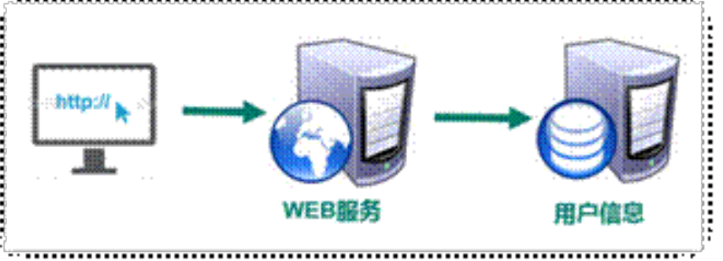
缺点：单点性能压力, 无法扩展.
SSO(single sign on)模式
分布式：sso 模式
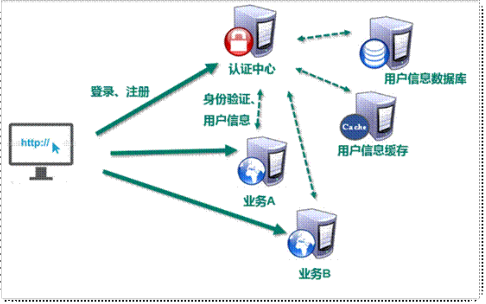
优点：用户身份信息独立管理，更好的分布式管理
可以自己拓展安全策略
缺点：认证服务器访问压力比较大
Token 模式
业务流程图：
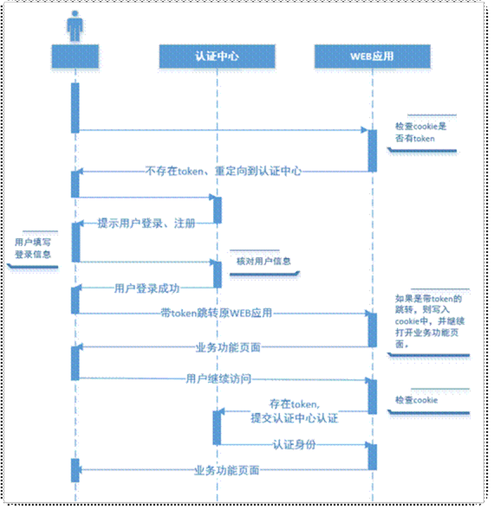
优点：token 无状态、session 有状态
基于标准化：你的 API 可以采用标准化的 JSON Web Token（JWT）
缺点：占用带宽, 无法在服务器端销毁.
基于微服务开发，选择 token 的形式相对较多，因此我使用 token 作为用户认证的标准
使用 JWT 进行跨域身份验证
传统用户身份验证
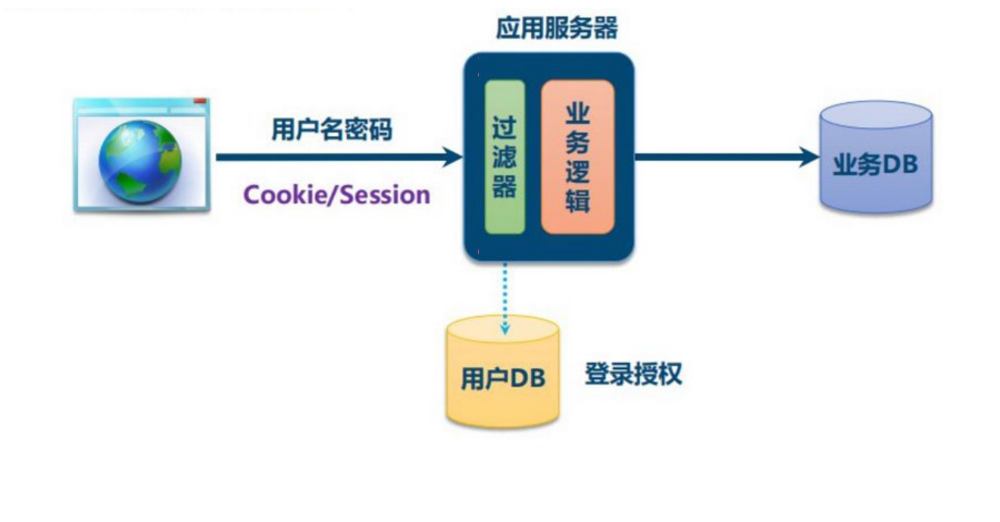
项目会员登录、注册业务流程
登录
后台获取 mobile、password 二个字段, 校验数据库的加盐字段是否和 password 匹配. -> 返回 jwt token.
注册
获取到 nickname、mobile、password、code 四个字段. 从 redis 获取发送到验证码, 查询数据库中是否存在相同的手机号码, 如果存在说明这个手机号已经注册过了. --> 添加信息到数据库
微信登录
微信登录使用的是 OAuth2 授权机制, 使用的是具体的授权码方式实现.
第一步：用户点击网站微信登录图标.
后端带上 AppId 和 AppSecret 和回调域名参数请求微信 OAuth2 授权.
1 | String baseUrl = "https://open.weixin.qq.com/connect/qrconnect" + |
上面 URL 中，response_type参数表示要求返回授权码（code），appid参数让 微信 知道是谁在请求，redirect_uri参数是 微信 接受或拒绝请求后的跳转网址，scope参数表示要求的授权范围（这里是登录）。scope 也表示资源分配着额外指定的细分权限. 这里是只能做登录.
第二步: 微信返回二维码供用户扫码
返回到字符串如下
1 | https://open.weixin.qq.com/connect/qrconnect?appid=wxed9954c01bb89b47&redirect_uri=http%3A%2F%2Flocalhost%3A8160%2Fapi%2Fucenter%2Fwx%2Fcallback&response_type=code&scope=snsapi_login&state=atguigu#wechat_redirect |
前端使用 qrxxx 组件将字符串转换为微信二维码.
第三步：会员扫码确认登录 , 也就是授权, 微信带上 code 回调 redirect_uri, 后端再带上 code 和 appId 和 appSecret 请求微信相关地址. 如下图
1 | String baseAccessTokenUrl = "https://api.weixin.qq.com/sns/oauth2/access_token" + |
使用 httpClient 调用地址, 返回 accessToken.
第四步: 获取 accessToken 中的 appid（每个微信唯一标识）, feign 调用接口, 通过 appid 查询 ucenter_member 这张表是否有存在此 appid.
- 该用户第一次登录：拿着 accessToken 和 appid 请求微信相关地址, 得到该用户的名称, 头像等参数. 并将其加入到数据库中. 并生成 jwt token, 重定向到前端页面.
1 | return "redirect:http://localhost:3000?token="+jwtToken; |
- 改用户数据库里已经存在, 直接返回 token + 重定向.
项目管理员登录、注册业务流程
执行流程
使用 spring-security 做用户的认证与授权.
认证流程：
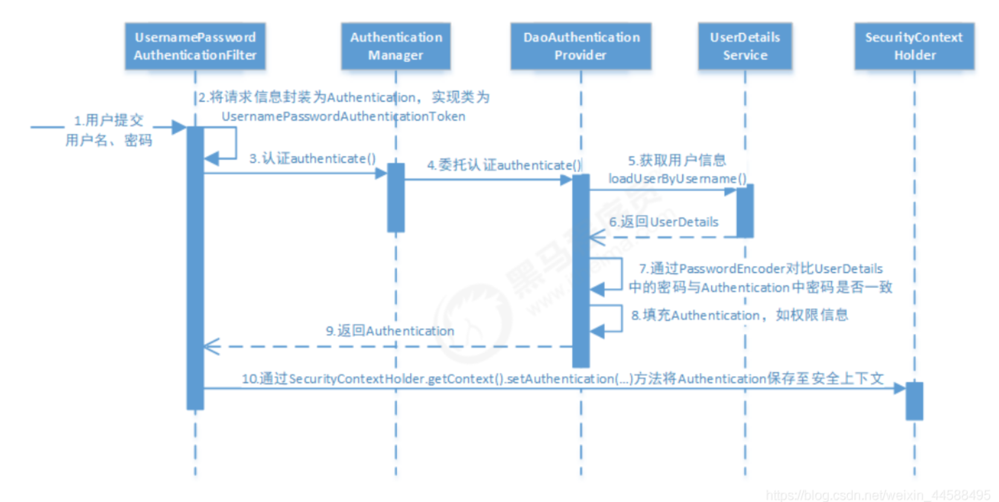
我们自己写了个类继承 PasswordEncoder, 重写 encode 和 matches 方法. 使用的是 md5 加密。
授权流程：
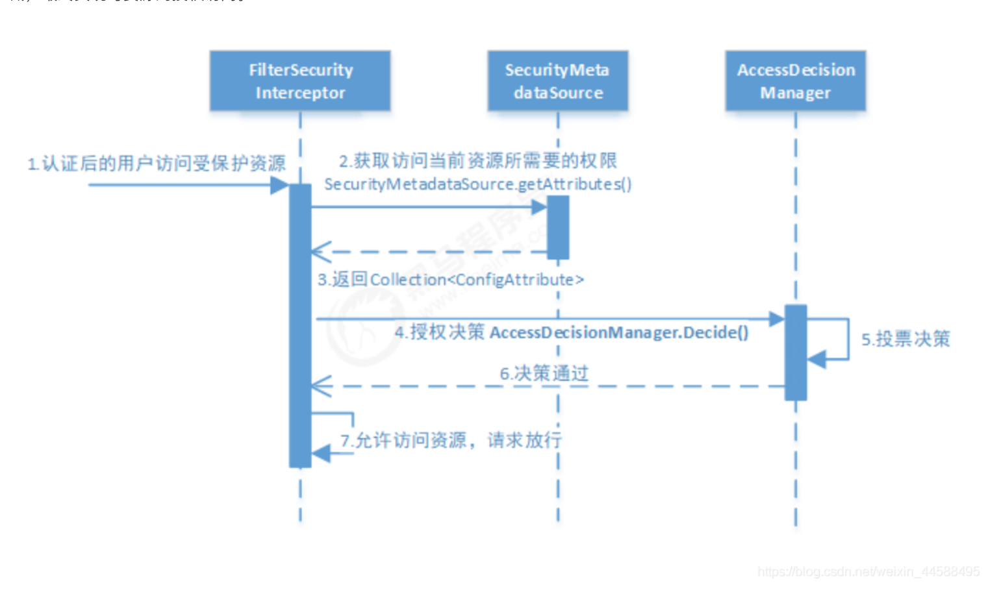
用户登出流程：
通过 request 中的 header 的 token, 获取到 token 到 body 到 username, 清楚掉 redis 中 username 的 key.
自定义生成 token:TokenManager 类. token 生成，token 解析, token 过期时间.
微信支付
课程分为免费课程和付费课程，如果是免费课程可以直接观看，如果是付费观看的课程，用户需下
单支付后才可以观看
1、发起生成订单的请求, 我们拿到 courseId 和 HttpServletRequest 二个参数, request 的 header 里面携带有 token, 我们使用 JWt 工具类解析出用户 id（我们使用 jwt 生成 token 时往 token 的 body 里面存放了 id 字段, 所有我们可以解析).根据 courseId 和 userId 远程调用获取信息，存到 order 表里面，使用工具类生成订单 id, 返回订单 id.
2、前端跳转到订单去支付页面, 通过返回的订单 id 调用 api, 回显订单信息, 比如课程名称，支付金额 etc.
3、点击去支付, 后台生成微信支付二维码接口,需要商户 appId, partnerkey,notifyurl 准备条件。微信固定的 api. 前端 qriously 组件解析二维码接口里面的 code_url, 生成图片.
4、扫码支付：每隔 5 秒，通过订单 id 查询支付状态, 如果 status=已支付,后台会将 order 表的状态改为 1（已经支付），同时还会在 pay_log 表中新增一条记录。前台清除前端定时器,跳转到课程页面。
面试题
HTTP 协议是有状态还是无状态的
定义
Http 无状态协议，是指协议对于交互性场景没有记忆能力.
举个例子
在点击一个纯的 html 网页，请求获取服务器的 html 文件资源时，每次 http 请求都会返回同样的信息，因为这个是没有交互的，每一次的请求都是相互独立的。第一个请求和第二个请求也没有先后顺序，返回处理哪个，结果都是同样的资源页面，因为这种场景是无交互的，无论是什么人请求这个地址，服务器都是返回那个相同的响应。
具体场景
如在购物网站上买一个书包：
- 输入用户名登录
- 选择一款你喜欢的书包加入到购物车中 /cart 用户信息，产品信息
- 购买支付 /pay 用户信息，商品信息，金额信息
所谓的登录只是验证你是否是一个合法用户，若是合法则跳转到信息的页面，不合法则告知用户名密码错误。但是我们在第一步给服务器发完/login 接口后，服务器就忘记了。。。忘记了你这个人，到底有没有经过认证。所以在添加商品时/cart 你还是需要将你的账号密码和商品信息一起提交给 addCart 接口，再让服务器做验证。
总结
上面的无状态是指的，无登录状态，即服务器不知道某个用户是否已登录过了。因为愚蠢的服务器不知道客户端是否已登录过了,所以每次都要在交互场景(会话)中请求中带上上一次的请求信息，如账号、密码。明明只需要在/login 接口中，才需要对比数据库中的账号密码和客户端传的是否一致来确定合法性。这下在添加购物车中也需要再一次的进行同样的重复且没有必要的操作，即降低了响应速度，又对用户不友好（因为每次都需要填账号，密码）
对于 http 无状态的解决方案：
两种用于保持 HTTP 状态的技术就应运而生了，一个是 Cookie，而另一个则是 Session.
Cookie 是客户端的存储空间，由浏览器来维持。具体来说 cookie 机制采用的是在客户端保持状态的方案。
实现过程：
cookie 是一个非常具体的东西，指的就是浏览器里面能永久存储的一种数据，仅仅是浏览器实现的一种数据存储功能。cookie 由服务器生成，发送给浏览器，浏览器把 cookie 以 kv 形式保存到某个目录下的文本文件内，下一次请求同一网站时会把该 cookie 发送给服务器。由于 cookie 是存在客户端上的，所以浏览器加入了一些限制确保 cookie 不会被恶意使用，同时不会占据太多磁盘空间，所以每个域的 cookie 数量是有限的
Cookie 在客户端是由浏览器来管理的。浏览器能够保证 Google 只会操作 Google 的 Cookie 而不会操作 Baidu 的 Cookie，从而保证用户的隐私安全
cookie 保存登录信息多种方案
- 方案一：最直接的是把用户名与密码都保持到 Cookie 中，下次访问时检查 Cookie 中的用户名与密码，与数据库比较。这是一种比较危险的选择，一般不把密码等重要信息保存到 Cookie 中。
- 方案二：是把密码加密后保存到 Cookie 中，下次访问时解密并与数据库比较。这种方案略微安全一些。如果不希望保存密码，还可以把登录的时间戳保存到 Cookie 与数据库中，到时只验证用户名与登录时间戳就可以了。
- 方案三：只在登录时查询一次数据库，以后访问验证登录信息时不再查询数据库。实现方式是把账号按照一定的规则加密后，连同账号一块保存到 Cookie 中。下次访问时只需要判断账号的加密规则是否正确即可
Session
- Session，中文经常翻译为会话，其本来的含义是指有始有终的一系列动作/消息，比如打电话是从拿起电话拨号到挂断电话这中间的一系列过程可以称之为一个 Session。然而当 Session 一词与网络协议相关联时，它又往往隐含了“面向连接”或“保持状态”这样两个含义。
- Session 是另一种记录客户状态的机制，不同的是 Cookie 保存在客户端浏览器中，而 Session 保存在服务器上。
- 客户端浏览器访问服务器的时候，服务器把客户端信息以某种形式记录在服务器上，这就是 Session。客户端浏览器再次访问时，只需要从该 Session 中查找该客户的状态就可以了。
- 虽然 Session 保存在服务器，对客户端是透明的，它的正常运行仍然需要客户端浏览器的支持。这是因为 Session 需要使用 Cookie 作为识别标志。HTTP 协议是无状态的，Session 不能依据 HTTP 连接来判断是否为同一客户，因此服务器向客户端浏览器发送一个名为 JSESSIONID 的 Cookie，它的值为该 Session 的 id（即放在 HTTP 响应报文头部信息里的 Set-Cookie）。Session 依据该 Cookie 来识别是否为同一用户。
- 可是 session 有一个缺陷：如果 web 服务器做了负载均衡，那么下一个操作请求到了另一台服务器的时候 session 会丢失。
- cookie 是一个实际存在的、具体的东西，http 协议中定义在 header 中的字段。
- Session 是另一种记录客户状态的机制，不同的是 Cookie 保存在客户端浏览器中，而 Session 保存在服务器上。
- 客户端浏览器访问服务器的时候，服务器把客户端信息以某种形式记录在服务器上。这就是 Session。客户端浏览器再次访问时只需要从该 Session 中查找该客户的状态就可以了。
- 如果说 Cookie 机制是通过检查客户身上的“通行证”来确定客户身份的话，那么 Session 机制就是通过检查服务器上的“客户明细表”来确认客户身份。Session 相当于程序在服务器上建立的一份客户档案，客户来访的时候只需要查询客户档案表就可以了。
- Cookie 不是很安全，别人可以分析存放在本地的 COOKIE 并进行 COOKIE 欺骗，考虑到安全应当使用 Session ；
- session 传输数据少，数据结构灵活：相较于 cookie 来说，session 存储在服务端，客户端仅保留换取 session 的用户凭证。因此传输数据量小，速度快。
- session 更安全：检验、生成、验证都是在服务端按照指定规则完成，而 cookie 可能被客户端通过 js 代码篡改。
- session 的不足：服务器是有状态的。多台后端服务器无法共享 session。解决方法是，专门准备一台 session 服务器，关于 session 的所有操作都交给它来调用。而服务器之间的调用，可以走内网 ip，走 RPC 调用（不走 http）。
Token
Token 是服务端生成的一串字符串，以作客户端进行请求的一个令牌，当第一次登录后，服务器生成一个 Token 便将此 Token 返回给客户端，以后客户端只需带上这个 Token 前来请求数据即可，无需再次带上用户名和密码。
- token 是无状态的，支持移动设备，跨程序调用，安全
基于 Token 的身份验证的过程如下
- 用户通过用户名和密码发送请求。
- 程序验证。
- 程序返回一个签名的 token 给客户端。
- 客户端储存 token,并且每次用于每次发送请求。
- 服务端验证 token 并返回数据。
JWT 令牌
JWT 是 token 的一种实现。
JWT 的组成：
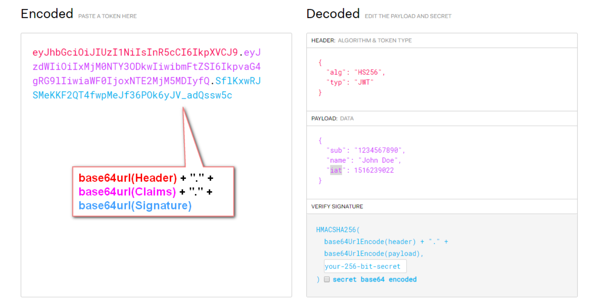
该对象为一个很长的字符串，字符之间通过"."分隔符分为三个子串。
每一个子串表示了一个功能块，总共有以下三个部分：JWT 头、有效载荷和签名
JWT 头
JWT 头部分是一个描述 JWT 元数据的 JSON 对象，通常如下所示。在上面的代码中，alg 属性表示签名使用的算法，默认为 HMAC SHA256（写为 HS256）；typ 属性表示令
1 | { |
牌的类型，JWT 令牌统一写为 JWT。最后，使用 Base64 URL 算法将上述 JSON 对象转换为字符串保存。
有效载荷
有效载荷部分，是 JWT 的主体内容部分，也是一个 JSON 对象，包含需要传递的数据。
1 | { |
请注意，默认情况下 JWT 是未加密的，任何人都可以解读其内容，因此不要构建隐私信息字段，存放保密
信息，以防止信息泄露。
JSON 对象也使用 Base64 URL 算法转换为字符串保存
签名哈希
签名哈希部分是对上面两部分数据签名，通过指定的算法生成哈希，以确保数据不会被篡改。
首先，需要指定一个密码（secret）。该密码仅仅为保存在服务器中，并且不能向用户公开。然后，使用标头中指定的签名算法（默认情况下为 HMAC SHA256）根据以下公式生成签名。
1 | HMACSHA256(base64UrlEncode(header) + "." + base64UrlEncode(claims), secret) |
在计算出签名哈希后，JWT 头，有效载荷和签名哈希的三个部分组合成一个字符串，每个部分用"."分隔，就构成整个 JWT 对象。
JWT 的用法
客户端接收服务器返回的 JWT，将其存储在 Cookie 或 localStorage 中。
此后，客户端将在与服务器交互中都会带 JWT。如果将它存储在 Cookie 中，就可以自动发送，但是不会
跨域，因此一般是将它放入 HTTP 请求的 Header Authorization 字段中。当跨域时，也可以将 JWT 被放置
于 POST 请求的数据主体中。
JWT 问题与趋势
- JWT 不仅可用于认证，还可用于信息交换。善用 JWT 有助于减少服务器请求数据库的次数。
- 生产的 token 可以包含基本信息，比如 id、用户昵称、头像等信息，避免再次查库
- 存储在客户端，不占用服务端的内存资源
- JWT 默认不加密，但可以加密。生成原始令牌后，可以再次对其进行加密。
- 当 JWT 未加密时，一些私密数据无法通过 JWT 传输。
- JWT 的最大缺点是服务器不保存会话状态，所以在使用期间不可能取消令牌或更改令牌的权限。也就
- 是说，一旦 JWT 签发，在有效期内将会一直有效。
- JWT 本身包含认证信息，token 是经过 base64 编码，所以可以解码，因此 token 加密前的对象不应该
- 包含敏感信息，一旦信息泄露，任何人都可以获得令牌的所有权限。为了减少盗用，JWT 的有效期不宜设置太长。对于某些重要操作，用户在使用时应该每次都进行进行身份验证。
- 为了减少盗用和窃取，JWT 不建议使用 HTTP 协议来传输代码，而是使用加密的 HTTPS 协议进行传
输。
OAuth2
1）介绍：OAuth2 是目前最流行的授权机制，用来授权第三方应用，获取用户数据
2）快递员问题：我住在一个小区，小区有门禁系统，进入的时候需要输入密码，我经常网购，每天都有快递员来送货，我必须找到一个办法，让快递员通过门禁系统.
如果我告诉他密码，他就拥有了我同样的权限，好像不太合适。于是
- 1、门禁系统下面增加一个按钮，叫做获取授权, 快递员需要按这个按钮，去申请授权.
- 2、按下按钮, 我手机上会跳出谈话框-> 快递员 xx 正在申请授权.
- 3、我点击确定, 门禁得到允许, 向快递员显示一个进入小区的令牌(access token). 在有效时间内有效.
- 4、快递员向门禁系统输入令牌, 进入小区.
有人可能会问，为什么不是远程为快递员开门，而要为他单独生成一个令牌？这是因为快递员可能每天都会来送货，第二天他还可以复用这个令牌。另外，有的小区有多重门禁，快递员可以使用同一个令牌通过它们。
3）互联网场景
首先，居民小区就是储存用户数据的网络服务。比如，微信储存了我的好友信息，获取这些信息，就必须经过微信的"门禁系统"。
其次，快递员（或者说快递公司）就是第三方应用，想要穿过门禁系统，进入小区。
最后，我就是用户本人，同意授权第三方应用进入小区，获取我的数据。
简单说，OAuth 就是一种授权机制。数据的所有者告诉系统，同意授权第三方应用进入系统，获取这些数据。系统从而产生一个短期的进入令牌（token），用来代替密码，供第三方应用使用。
4）令牌与密码区别
（1）令牌是短期的，到期会自动失效，用户自己无法修改。密码一般长期有效，用户不修改，就不会发生变化。
（2）令牌可以被数据所有者撤销，会立即失效。以上例而言，屋主可以随时取消快递员的令牌。密码一般不允许被他人撤销。
（3）令牌有权限范围（scope），比如只能进小区的二号门。对于网络服务来说，只读令牌就比读写令牌更安全。密码一般是完整权限。
OAuth 2.0 是一种授权机制，主要用来颁发令牌（token）
OAuth2 如何解决分布式访问的？
1、登录成功之后，按照一定规则生成字符串，字符串包含用户信息
2、把字符串通过路径传递、或者 cookie
3、后面再发请求的时候，每次都带着字符串进行发送，获取字符串，从字符串里面获取用户信息登录。
到这里是不是和 token 很相似. 对的. jwt 是 OAuth2 的一种具体的实现。
OAuth2 主要解决二个问题： - 开放间系统授权
- 分布式访问问题
OAuth2 的四种方式
- 授权码（authorization-code）
- 隐藏式（implicit）
- 密码式（password）
- 客户端凭证（client credentials）
以上四种方式, 第三方应用申请令牌，都必须先到系统备案, 说明自己的身份. 然后会拿到二个识别码
客户端 ID(client ID) 和 客户端密钥(client secret)
授权码
授权码（authorization code）方式，指的是第三方应用先申请一个授权码，然后再用该码获取令牌。
第一步，A 网站提供一个链接，用户点击后就会跳转到 B 网站，授权用户数据给 A 网站使用。下面就是 A 网站跳转 B 网站的一个示意链接。
OAuth 2.0 的四种方式
可能追问的问题
你项目中登录时怎么实现的？
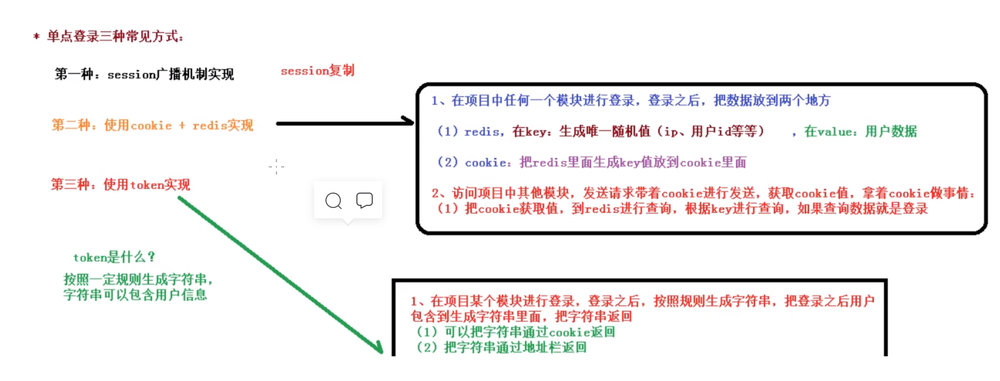
你使用什么方式生成 token 的*
使用 Jwt 生成 token 字符串
Jwt 有几部分组成，分别为什么？
三部分组成，分别为：jwt 头、有效载荷（用户信息）、签名哈希（防伪标志）
你登录功能的实现流程是什么？
调用登录的接口，会返回一个 token 字符串，把 token 字符串放到 cookie 中，创建前端拦截器进行判断，如果 cookie 里包含 token 字符串，把 token 放到 header 中。调用接口会从 header 中取值到 token，根据 token 值获取到用户信息，然后在页面中进行显示.
你是如何获取扫码人微信信息的？
扫码后，微信会返回两个值 code 和 state；然后拿着这个 code 去请求微信的固定地址，获得两个值 access*token 访问凭证和 openid 每个微信的唯一表示；然后拿着这两个再去请求微信的一个固定地址获取到扫码人的信息
系统中都有那些角色？数据库是怎么设计的？前台：会员（学员）
后台：系统管理员、运营人员
后台分库，每个微服务一个独立的数据库，使用了分布式 id 生成器
视频点播是怎么实现的（流媒体你们是怎么实现的）
我们直接接入了阿里云的云视频点播。云平台上的功能包括视频上传、转码、加密、智能审核、监控统
计等。
还包括视频播放功能，阿里云还提供了一个视频播放器。
***微信支付的流程_
如果课程是收费课程，点击立即购买，生成课程订单；点击订单页面中的去支付，生成微信支付二维码；使用微信区扫秒二维码实现支付；支付之后，每个 3 秒查询支付状态（是否支付成功），如果没有支付成功就等待，如果支付成功之后，修改订单状态，向支付表中添加记录
分布式系统的 CAP 原理**
CAP 定理：
指的是在一个分布式系统中，Consistency（一致性）、 Availability（可用性）、Partition tolerance（分
区容错性），三者不可同时获得。
一致性（C）：在分布式系统中的所有数据备份，在同一时刻是否同样的值。（所有节点在同一时间的
数据完全一致，越多节点，数据同步越耗时）
可用性（A）：负载过大后，集群整体是否还能响应客户端的读写请求。（服务一直可用，而且是正常响
应时间）
分区容错性（P）：分区容错性，就是高可用性，一个节点崩了，并不影响其它的节点（100 个节点，挂
了几个，不影响服务，越多机器越好）
CA 满足的情况下，P 不能满足的原因：
数据同步©需要时间，也要正常的时间内响应(A)，那么机器数量就要少，所以 P 就不满足CP 满足的情况下，A 不能满足的原因：
数据同步©需要时间, 机器数量也多§，但是同步数据需要时间，所以不能再正常时间内响应，所以 A 就
不满足
AP 满足的情况下，C 不能满足的原因：
机器数量也多§，正常的时间内响应(A)，那么数据就不能及时同步到其他节点，所以 C 不满足
结论：
分布式系统中 P,肯定要满足，所以我们只能在一致性和可用性之间进行权衡
如果要求一致性，则选择 zookeeper，如金融行业
如果要求可用性，则 Eureka，如教育、电商系统
没有最好的选择，最好的选择是根据业务场景来进行架构设计
****前端渲染和后端渲染有什么区别
前端渲染是返回 json 给前端，通过 javascript 将数据绑定到页面上
后端渲染是在服务器端将页面生成直接发送给服务器，有利于 SEO 的优化
snowflake 算法：
1 | 使用41bit作为毫秒数，10bit作为机器的ID（5个bit是数据中心，5个bit的机器ID），12bit作为毫秒内的流水号（意味着每个节点在每毫秒可以产生 4096 个 ID），最后还有一个符号位，永远是0。64bit 8 byte. |
id 字段使用主键策略：分布式系统唯一 ID 生成方案汇总
EasyExcel
Java 领域解析、生成 Excel 比较有名的框架有 Apache poi、jxl 等。但他们都存在一个严重的问题就是
非常的耗内存。如果你的系统并发量不大的话可能还行，但是一旦并发上来后一定会 OOM 或
者 JVM 频繁的 full gc。
EasyExcel 是阿里巴巴开源的一个 excel 处理框架，以使用简单、节省内存著称。EasyExcel 能大大减
少占用内存的主要原因是在解析 Excel 时没有将文件数据一次性全部加载到内存中，而是从磁盘上一
行行读取数据，逐个解析。
EasyExcel 采用一行一行的解析模式，并将一行的解析结果以观察者的模式通知处理
（AnalysisEventListener）。
IDEA 自动生成序列号 iD
Perference->Editor->Inspections->Serialization issues->Serializable class without 'serialVersionUUID’
阿里数据库必有三字段
Gmt: 格林威治时间
1 | id , gmt_create, gtm_modified. |
text 类型 , 要提出来单独一张表
禁止使用物理外键.
使用 maven 分模块管理，都会有一个父级项目，pom 文件一个重要的属性就是 packaging（打包类型），一般来说所有的父级项目的 packaging 都为 pom，packaging 默认类型 jar 类型，如果不做配置，maven 会将该项目打成 jar 包。
@RequestBody 与 @ResponseBody 和 @RequestParam 区别
- @Responsebody 注解表示该方法的返回的结果直接写入 HTTP 响应正文中，一般在异步获取数据时使用；
- 在使用@RequestMapping 后，返回值通常解析为跳转路径，加上@Responsebody 后返回结果不会被解析为跳转路径，而是直接写入 HTTP 响应正文中。例如，异步获取 json 数据，加上@Responsebody 注解后，就会直接返回 json 数据。
- @RequestBody 注解则是将 HTTP 求正文插入方法中，使用适合的 HttpMessageConverter 将请求体写入某个对象。
- @RequestParam 用来处理
Content-Type为application/x-www-form-urlencoded编码的内容，Content-Type默认为该属性**。@RequestParam 也可用于其它类型的请求，例如：POST、DELETE 等请求**。
ps: @RequestBody 不能被 get 使用.
reference doc: POST、GET、@RequestBody 和@RequestParam 区别
@PathVariable
@PathVariable注解，其用来获取请求路径（url）中的动态参数
1 | (value = "person/profile/{id}/{name}/{status}") |
项目中使用的异常处理
@RestControllerAdvice + @ExceptionHandler(GuliException.class) 处理特定的异常.
通过日志打印到指定文件中.
Mybatis-plus 只查询指定列
1 | wrapper.select("video_source_id"); |
Stream 流
1 | List<String> videoIdList = eduVideoList.stream().map(EduVideo::getVideoSourceId).filter(Objects::nonNull).collect(Collectors.toList()); |
SEO: search engine optimization 搜索引擎优化
cms: campaign management system 活动管理系统.
redis 启动
redis-server /usr/local/etc/redis.conf
redis-cli -h 127.0.0.1 -p 6379
RBAC
rbac:Role-Based Access Control 基于角色的访问控制. like persona.
RBAC 认为 “授权”实际上是 Who、What、How 三元组之间的关系, 也就是 Who 对 What 进行 How 的操作.
Extention 阿里云 OSS
准备环境
1、申请阿里云账号
2、实名认证
3、开通“对象存储 OSS 服务”
4、进入管理控制台
开始操作
1、创建 Bucket
2、引入公共 maven 的 sdk -->
aliyun-sdk-oss
aliyun-sdk-core
3、配置文件
endpoint、bucketName、accessKeyId、accessKeySecret
我们使用MultipartFile接受文件
1 | public String uploadFileAvatar(MultipartFile file) { |
Extention 阿里云 vod
视频点播（ApsaraVideo for VoD）是集音视频采集、编辑、上传、自动化转码处理、媒体资源管理、分
发加速于一体的一站式音视频点播解决方案。
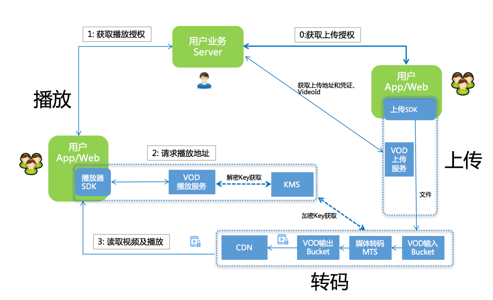
- 用户获取上传授权
- vod 下发 上传地址和凭证以及 VideoId
- 用户上传视频保存地址 ID(VideoId)
- 用户服务端获取播放凭证
- Vod 下发带时效的播放凭证
- 用户服务端将播放凭证下发给客户端完成视频播放
mavenAliyun-java-sdk-vod
Aliyun-java-sdk-core
plus：aliyun-java-vod-upload-1.4.11 并未开源
所以我们使用 maven 命令在本地仓库安装 jar 包. 进入到官方 demo-lib 目录下
1 | mvn install:install-file |
Extention 阿里云短信服务
SMS：short message service 短信服务
调用官方 api.
生成短信验证码, 将手机号与短信验证码作为 K-V 存到 Redis. 设置过期时间为 5mins.